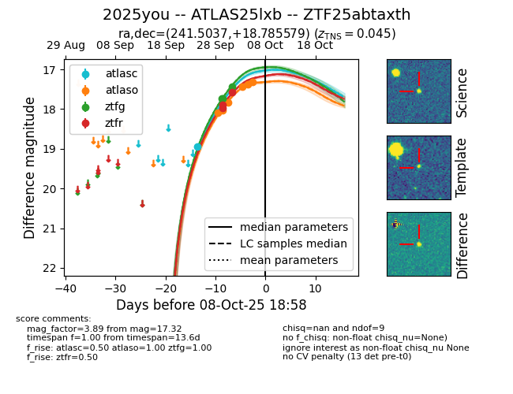
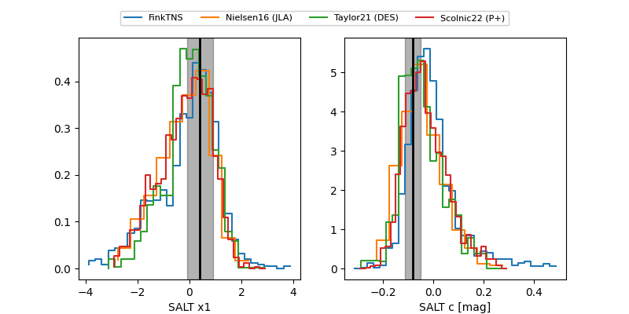

FINK: ZTF25abtaxth
Lasair: ZTF25abtaxth
ALeRCE: ZTF25abtaxth
TNS: 2025you
YSE: 2025you
ZTF25abtaxth (ztf,fink)
2025you (tns,yse)
ATLAS25lxb (atlas)
equatorial (ra, dec) = (241.5037,+18.78558)
galactic (l, b) = (33.0421,+44.71322)


last atlasc=18.95, atlaso=17.32, ztfg=17.44, ztfr=17.57
1 atlasc, 6 atlaso, 3 ztfg, 3 ztfr detections